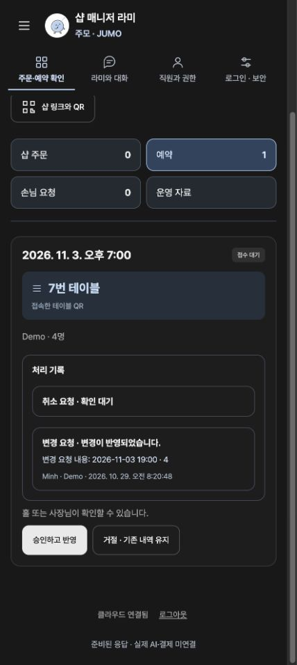
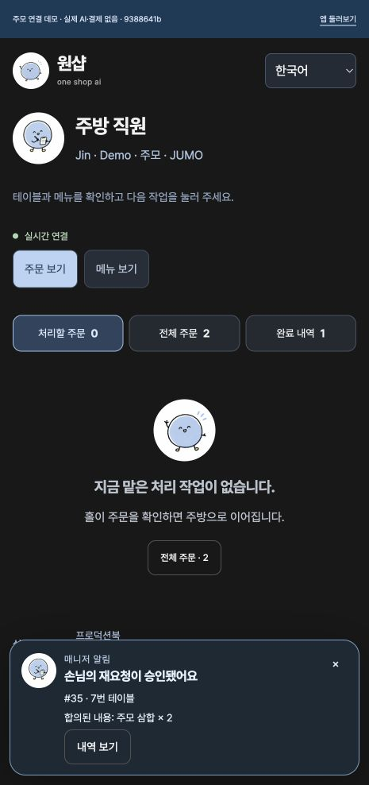

Rami AI is the shop agent of the one shop ai platform. Guests at diners, restaurants and cafés scan a table QR code, then choose from the menu, order and book in their own language. The owner and the floor and kitchen staff each pick up the same order on their own screens.
Who it's for
Owners and floor and kitchen staff at diners, restaurants and cafés, and their guests who speak many languages
The problem we solved
Guests who speak another language need to understand the menu and order with ease, and the shop needs to handle orders, bookings, changes and cancellations in one place without missing any.
Our scope
Built four web apps for guests, owners, floor staff and kitchen staff, and a Supabase backend (order and booking storage, real-time notifications, owner password and session checks, staff permission checks). Also built a production book and trial demo in nine languages, a platform admin demo (v0.3) and a landing page in nine languages. AI replies follow prepared scenarios. No live AI model, online payment, POS or email and SMS notifications are connected.
Key features
- 01
QR table ordering
Guests scan the table QR code, pick a language, add dishes, check the table number and send the order.
- 02
Guidance in nine languages
Guest screens and Rami's messages are available in nine languages, including Korean, English, Vietnamese, Chinese and Japanese.
- 03
Owner app
Orders and bookings are saved on the server and appear on the owner's screen in real time, moving through accepted, preparing and done.
- 04
Floor and kitchen staff app
Floor staff handle accepting and serving, the kitchen sees items, quantities and cooking status, and the server checks each role's permissions.
- 05
Change and cancellation approval
When a guest asks to change items, quantities or a booking, or to cancel, the floor staff or owner approves it, or declines with a reason and suggests an alternative.
- 06
Platform admin
An admin demo with sample data, covering 19 operating areas such as shops, orders, support and billing in Korean, English and Vietnamese.
See the screens


If you want software to solve similar work, start by telling us where things stand.
Discuss your project